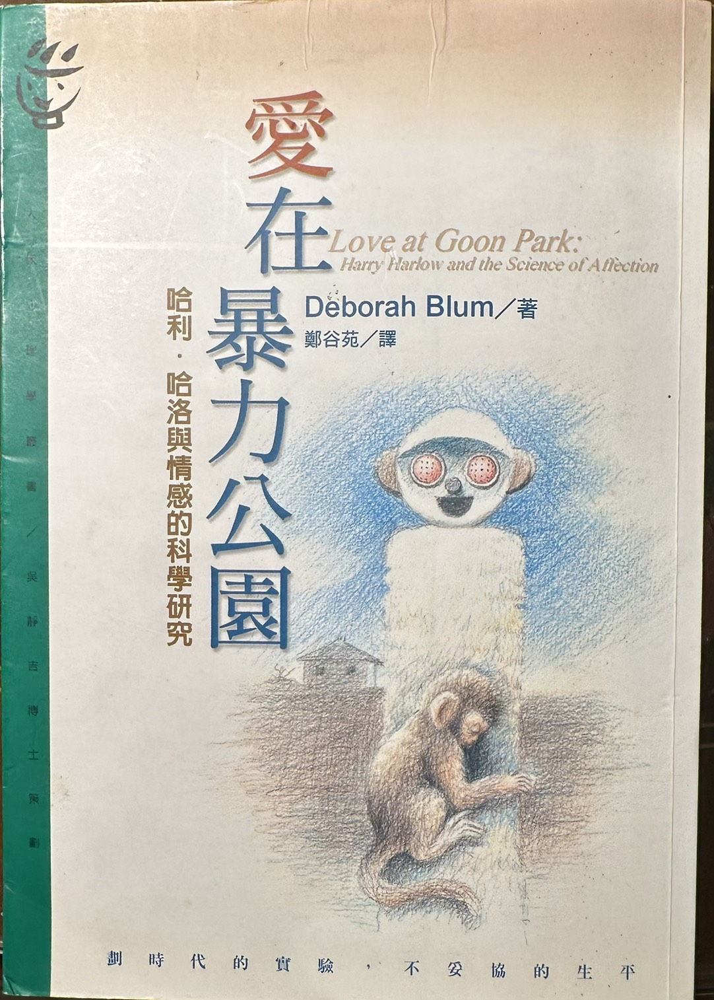

愛在暴力公園
趙叔帶領：深入探討愛與依附的真諦
📚 分享人：趙文煊 D.D.S.
台灣兒童牙科行為管理學之父
孩子王牙醫診所 負責醫師
主要資歷：
- • 美國馬利蘭大學兒童牙科專科醫師畢業
- • 美國兒童牙科專科醫師學會院士（ABPD Diplomate）
- • 中華民國兒童牙科醫學會專科醫師
- • 中華民國部定講師
- • 1995年美國兒童牙科醫學會畢業學生研究獎得主
- • 前中華民國兒童牙科醫學會理事長
- • 前臺北醫學大學附設醫院牙科部主任
- • 前臺北醫學大學附設醫院兒童牙科復健中心主任
- • 前台北市立萬芳醫院兒童牙科兼任主治醫師
📖 探討書目

《愛在暴力公園》
作者：黛博拉．布盧姆 (Deborah Blum)
主題：哈利·哈洛的恆河猴實驗，揭示愛與依附的真諦。
🎬 觀看預告與實驗片段
🌐 讀書會簡介：科學背後的人情味
各位好，歡迎加入本次讀書會網頁專區！本次分享主題為《愛在暴力公園》，由趙叔帶領大家深入探討心理學家哈利·哈洛的恆河猴實驗，如何揭示愛與依附的真諦。哈洛的實驗挑戰了傳統觀念，指出愛不僅是生理需求，而是情感溫暖和安全感的根本來源。雖然實驗方法曾引起倫理爭議，但其發現深刻影響了現代心理學與人際關係的理解。
趙叔以輕鬆詼諧的語調，結合多年兒童心理臨床及教學經驗，將帶領大家從科學角度重新認識愛的力量，並探討如何運用這些理念，提升家庭、社交與職場中的情感連結與心理健康。
無論您來自哪個行業，這場讀書會都將為您帶來新的啟發和感悟。期待與同屆好友們共聚一堂，開啟一段關於愛與人性的深刻對話。
🚀 立即報名，探索愛的科學！
座位有限，請盡早報名。